%%javascript
IPython.OutputArea.auto_scroll_threshold = 9999;DCGAN Tutorial!
from tensorflow.keras.datasets import mnist(x_train, y_train), (x_test, y_test) = mnist.load_data()generator에서 tanh를 activation으로 활용합니다.
tanh를 활용하면 output이 -1 ~ 1 사이로 나오기 때문에 Normalize를 해줄 때 127.5로 나눈 뒤 1을 빼줍니다.
x_train = x_train / 127.5 - 1
x_test = x_test / 127.5 - 1min 값과 max 값이 -1 ~ 1사이의 범위를 가져야 합니다.
x_train.min(), x_train.max()(-1.0, 1.0)x_train 값은 현재 28 * 28로 되어 있습니다.
이번에는 Conv2D Layer를 활용하여 모델을 빌드업하기 때문에 별도로 Flatten 이 필요 없습니다.
다만, channel을 1 추가하기 위한 reshape를 진행합니다.
x_train = x_train.reshape(-1, 28, 28, 1)필요한 모듈을 import 합니다.
import tensorflow as tf
from tensorflow.keras.layers import Dense, LeakyReLU, Dropout, Input, BatchNormalization, Reshape, Conv2D, Conv2DTranspose, UpSampling2D, Flatten, Activation
from tensorflow.keras.models import Sequential, Model
from tensorflow.keras.optimizers import Adam
from tensorflow.keras.initializers import RandomNormal
import numpy as np
import matplotlib.pyplot as pltHyperparameters
NOISE_DIM을 정의 합니다.
NOISE_DIM은 자유롭게 설정할 수 있으며, generator의 input으로 들어갑니다.
# gan에 입력되는 noise에 대한 dimension
NOISE_DIM = 100
# adam optimizer 정의, learning_rate = 0.0002, beta_1로 줍니다.
# Vanilla Gan과 DCGAN에서 이렇게 셋팅을 해주는데
# 이렇게 해줘야 훨씬 학습을 잘합니다.
adam = Adam(lr=0.0002, beta_1=0.5)Generator
generator를 정의합니다.
generator = Sequential([
Dense(256 * 7 * 7, input_dim=NOISE_DIM),
LeakyReLU(alpha=0.01),
Reshape((7, 7, 256)),
Conv2DTranspose(128, kernel_size=3, strides=2, padding='same'),
BatchNormalization(),
LeakyReLU(alpha=0.01),
Conv2DTranspose(64, kernel_size=3, strides=2, padding='same'),
BatchNormalization(),
LeakyReLU(alpha=0.01),
Conv2D(1, kernel_size=3, padding='same'),
Activation('tanh'),
])generator.summary()Model: "sequential"
_________________________________________________________________
Layer (type) Output Shape Param #
=================================================================
dense (Dense) (None, 12544) 1266944
_________________________________________________________________
leaky_re_lu (LeakyReLU) (None, 12544) 0
_________________________________________________________________
reshape (Reshape) (None, 7, 7, 256) 0
_________________________________________________________________
conv2d_transpose (Conv2DTran (None, 14, 14, 128) 295040
_________________________________________________________________
batch_normalization (BatchNo (None, 14, 14, 128) 512
_________________________________________________________________
leaky_re_lu_1 (LeakyReLU) (None, 14, 14, 128) 0
_________________________________________________________________
conv2d_transpose_1 (Conv2DTr (None, 28, 28, 64) 73792
_________________________________________________________________
batch_normalization_1 (Batch (None, 28, 28, 64) 256
_________________________________________________________________
leaky_re_lu_2 (LeakyReLU) (None, 28, 28, 64) 0
_________________________________________________________________
conv2d (Conv2D) (None, 28, 28, 1) 577
_________________________________________________________________
activation (Activation) (None, 28, 28, 1) 0
=================================================================
Total params: 1,637,121
Trainable params: 1,636,737
Non-trainable params: 384
_________________________________________________________________Discriminator
discriminator를 정의합니다.
discriminator = Sequential([
Conv2D(32, kernel_size=3, strides=2, padding='same', input_shape=(28, 28, 1)),
LeakyReLU(alpha=0.01),
Dropout(0.25),
Conv2D(64, kernel_size=3, strides=2, padding='same'),
LeakyReLU(alpha=0.01),
Conv2D(128, kernel_size=3, strides=2, padding='same'),
LeakyReLU(alpha=0.01),
Dropout(0.25),
Flatten(),
Dense(1, activation='sigmoid'),
])discriminator.summary()Model: "sequential_1"
_________________________________________________________________
Layer (type) Output Shape Param #
=================================================================
conv2d_1 (Conv2D) (None, 14, 14, 32) 320
_________________________________________________________________
leaky_re_lu_3 (LeakyReLU) (None, 14, 14, 32) 0
_________________________________________________________________
dropout (Dropout) (None, 14, 14, 32) 0
_________________________________________________________________
conv2d_2 (Conv2D) (None, 7, 7, 64) 18496
_________________________________________________________________
leaky_re_lu_4 (LeakyReLU) (None, 7, 7, 64) 0
_________________________________________________________________
conv2d_3 (Conv2D) (None, 4, 4, 128) 73856
_________________________________________________________________
leaky_re_lu_5 (LeakyReLU) (None, 4, 4, 128) 0
_________________________________________________________________
dropout_1 (Dropout) (None, 4, 4, 128) 0
_________________________________________________________________
flatten (Flatten) (None, 2048) 0
_________________________________________________________________
dense_1 (Dense) (None, 1) 2049
=================================================================
Total params: 94,721
Trainable params: 94,721
Non-trainable params: 0
_________________________________________________________________반드시 dicriminator를 compile 해주어야 합니다.
discriminator.compile(loss='binary_crossentropy', optimizer=adam)Gan
generator와 discriminator를 연결합니다.
# discriminator는 학습을 하지 않도록 하며, Gan 모델에서는 generator만 학습하도록 합니다.
discriminator.trainable = False
gan_input = Input(shape=(NOISE_DIM,))
x = generator(inputs=gan_input)
output = discriminator(x)gan 모델을 정의합니다.
gan = Model(gan_input, output)gan.summary()Model: "model"
_________________________________________________________________
Layer (type) Output Shape Param #
=================================================================
input_1 (InputLayer) [(None, 100)] 0
_________________________________________________________________
sequential (Sequential) (None, 28, 28, 1) 1637121
_________________________________________________________________
sequential_1 (Sequential) (None, 1) 94721
=================================================================
Total params: 1,731,842
Trainable params: 1,636,737
Non-trainable params: 95,105
_________________________________________________________________Compile
gan.compile(loss='binary_crossentropy', optimizer=adam)Batch
이미지 batch를 생성합니다. MNIST 이미지 batch가 차례대로 생성됩니다.
def get_batches(data, batch_size):
batches = []
for i in range(int(data.shape[0] // batch_size)):
batch = data[i * batch_size: (i + 1) * batch_size]
batches.append(batch)
return np.asarray(batches)시각화를 위한 유틸 함수 정의
def visualize_training(epoch, d_losses, g_losses):
# 오차에 대한 시각화
plt.figure(figsize=(8, 4))
plt.plot(d_losses, label='Discriminator Loss')
plt.plot(g_losses, label='Generatror Loss')
plt.xlabel('Epoch')
plt.ylabel('Loss')
plt.legend()
plt.show()
print('epoch: {}, Discriminator Loss: {}, Generator Loss: {}'.format(epoch, np.asarray(d_losses).mean(), np.asarray(g_losses).mean()))
#샘플 데이터 생성 후 시각화
noise = np.random.normal(0, 1, size=(24, NOISE_DIM))
generated_images = generator.predict(noise)
generated_images = generated_images.reshape(-1, 28, 28)
plt.figure(figsize=(8, 4))
for i in range(generated_images.shape[0]):
plt.subplot(4, 6, i+1)
plt.imshow(generated_images[i], interpolation='nearest', cmap='gray')
plt.axis('off')
plt.tight_layout()
plt.show()학습
BATCH_SIZE = 128
EPOCHS= 100# discriminator와 gan 모델의 loss 측정을 위한 list 입니다.
d_losses = []
g_losses = []
for epoch in range(1, EPOCHS + 1):
# 각 배치별 학습
for real_images in get_batches(x_train, BATCH_SIZE):
# 랜덤 노이즈 생성
input_noise = np.random.uniform(-1, 1, size=[BATCH_SIZE, NOISE_DIM])
# 가짜 이미지 데이터 생성
generated_images = generator.predict(input_noise)
# Gan에 학습할 X 데이터 정의
x_dis = np.concatenate([real_images, generated_images])
# Gan에 학습할 Y 데이터 정의
y_dis = np.zeros(2 * BATCH_SIZE)
y_dis[:BATCH_SIZE] = 0.9
# Discriminator 훈련
discriminator.trainable = True
d_loss = discriminator.train_on_batch(x_dis, y_dis)
# Gan 훈련
noise = np.random.uniform(-1, 1, size=[BATCH_SIZE, NOISE_DIM])
y_gan = np.ones(BATCH_SIZE)
# Discriminator의 판별 학습을 방지합니다
discriminator.trainable = False
g_loss = gan.train_on_batch(noise, y_gan)
d_losses.append(d_loss)
g_losses.append(g_loss)
if epoch == 1 or epoch % 5 == 0:
visualize_training(epoch, d_losses, g_losses)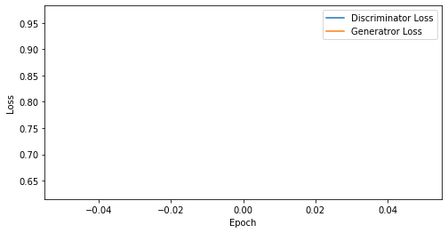
epoch: 1, Discriminator Loss: 0.6315852403640747, Generator Loss: 0.9663882255554199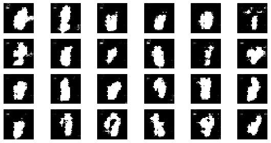
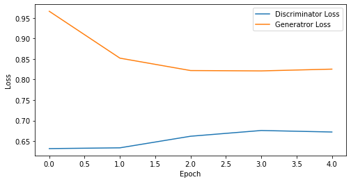
epoch: 5, Discriminator Loss: 0.6549117565155029, Generator Loss: 0.8573553681373596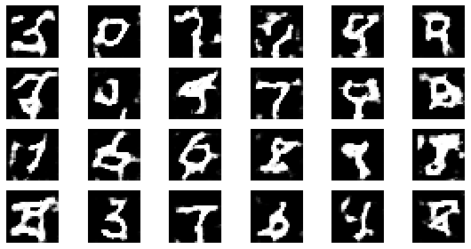
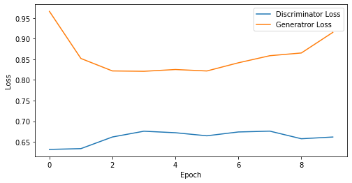
epoch: 10, Discriminator Loss: 0.6608109772205353, Generator Loss: 0.8589890718460083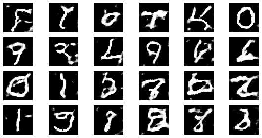
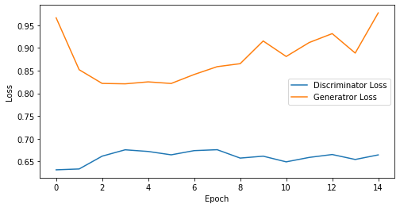
epoch: 15, Discriminator Loss: 0.6600244402885437, Generator Loss: 0.8787286758422852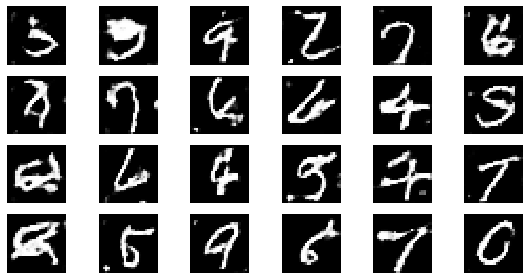
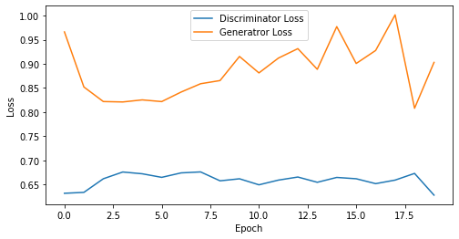
epoch: 20, Discriminator Loss: 0.6586568266153335, Generator Loss: 0.8861271470785141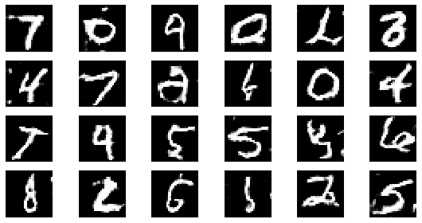
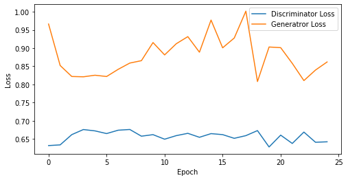
epoch: 25, Discriminator Loss: 0.6568902635574341, Generator Loss: 0.8797537732124329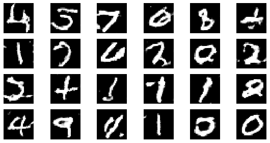
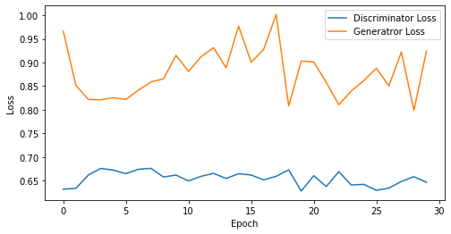
epoch: 30, Discriminator Loss: 0.6546059687932332, Generator Loss: 0.879257841904958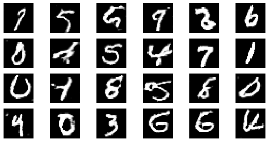
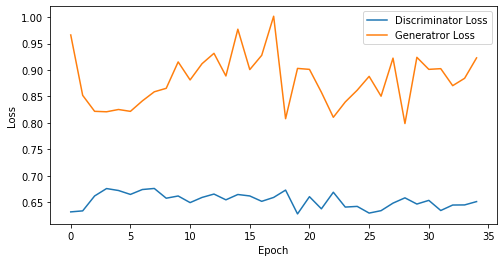
epoch: 35, Discriminator Loss: 0.6533162610871451, Generator Loss: 0.8817002177238464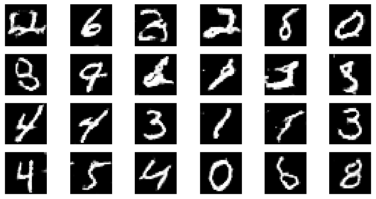
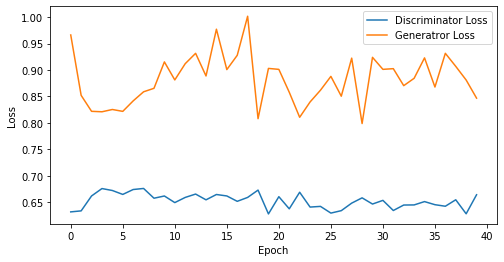
epoch: 40, Discriminator Loss: 0.6524993285536766, Generator Loss: 0.882348695397377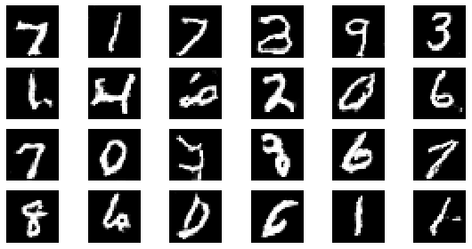
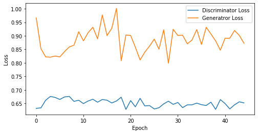
epoch: 45, Discriminator Loss: 0.6518061174286737, Generator Loss: 0.8837754898601108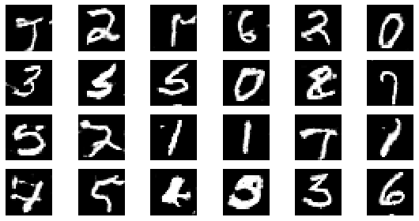
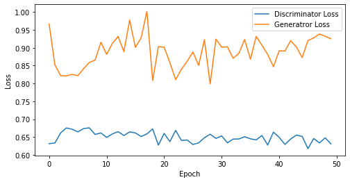
epoch: 50, Discriminator Loss: 0.6501579082012177, Generator Loss: 0.8882524931430816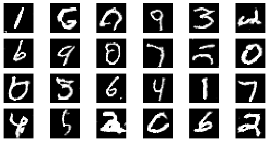
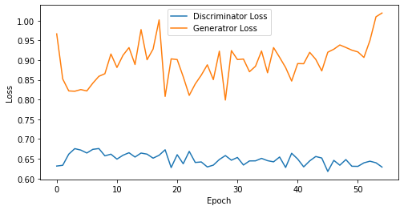
epoch: 55, Discriminator Loss: 0.6489301074634899, Generator Loss: 0.8948844725435431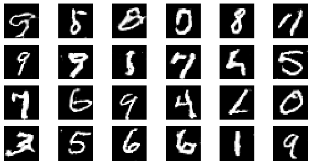
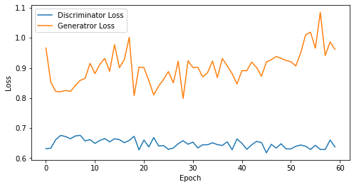
epoch: 60, Discriminator Loss: 0.6481594453255336, Generator Loss: 0.9026538650194804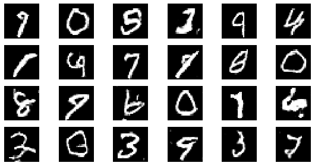
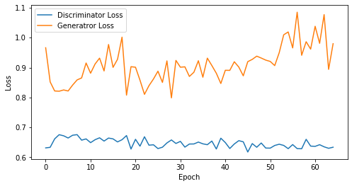
epoch: 65, Discriminator Loss: 0.6471972905672514, Generator Loss: 0.9096886295538682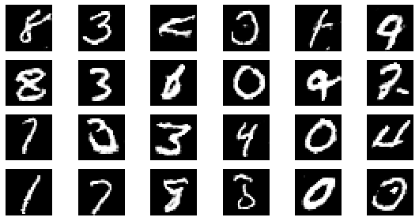
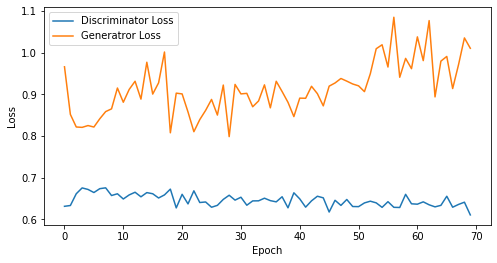
epoch: 70, Discriminator Loss: 0.646305765424456, Generator Loss: 0.9150441638060979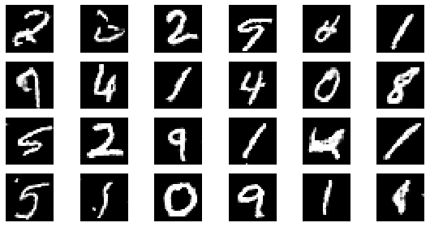
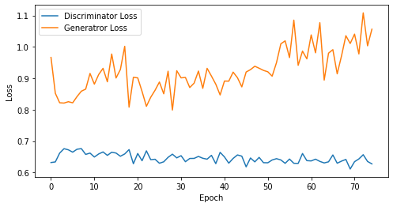
epoch: 75, Discriminator Loss: 0.6458314609527588, Generator Loss: 0.923188898563385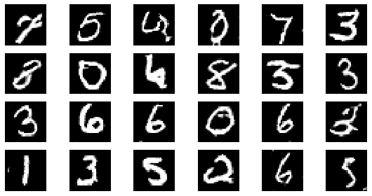
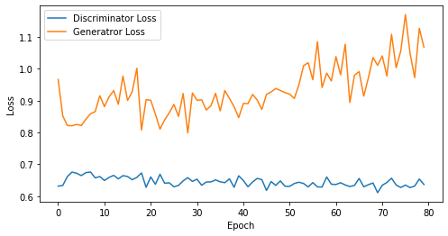
epoch: 80, Discriminator Loss: 0.6452663227915764, Generator Loss: 0.9328209340572358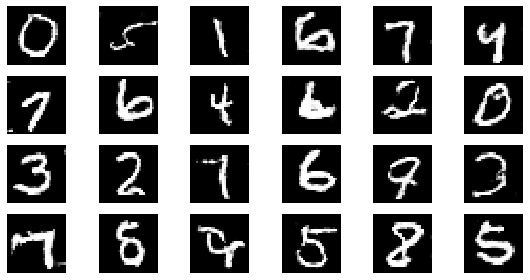
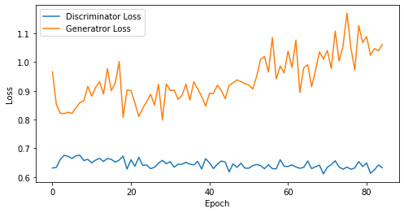
epoch: 85, Discriminator Loss: 0.6445040660745958, Generator Loss: 0.9398367124445298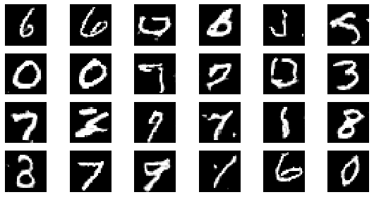
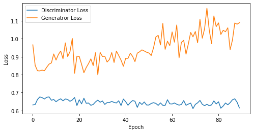
epoch: 90, Discriminator Loss: 0.6445914056566027, Generator Loss: 0.9453050785594517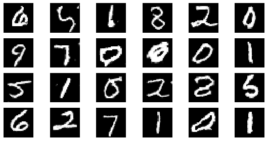
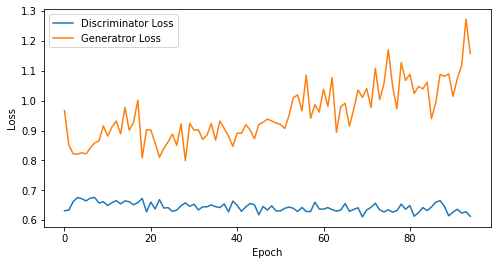
epoch: 95, Discriminator Loss: 0.6435928470210025, Generator Loss: 0.9548824511076275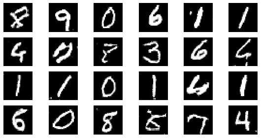
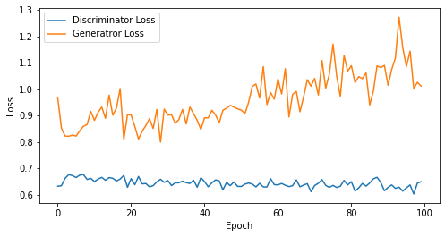
epoch: 100, Discriminator Loss: 0.6429753160476684, Generator Loss: 0.9598113656044006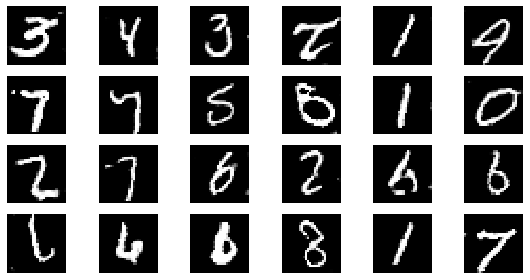